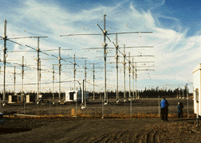
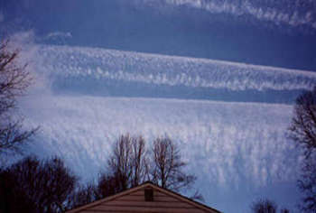

Since May, 2001 I have been witnessing bizarre contrail formations laid out over the skies above the Georgia Strait and in particular Gibsons on the Sunshine Coast by aircrafts flying at high altitudes. From my understanding by viewing photos from a Powell River website it's been apparently going on for much longer. Anyway, these contrails are laid out in strange X's and grid like patterns that linger for hours and eventually feather out to form fake cirrus type clouds. These cirrus type clouds join together and eventually create overcast skies that block out the sun. There is also a strange discolored rainbow circling the sun that becomes instantly apparent when these clouds drift near it. This activity seems to take place more regularly when the sky is perfectly blue and cloudless. Most importantly, these planes are completely silent. I wondered if there was some military exercise taking place so I attempted to get answers from the Comox base, the Federal Department of Transport, the Federal Department of National Defence and the B.C. Environment Lands and Parks. I even contacted our local airport at Wilson Creek/Sechelt as well as the Van. International Airport. The answers were all negative to anything military and other than several lessons involving the science behind contrail formation, I have not had any satisfactory explanations for this activity. I then decided to conduct my own scientific research. I took many photographs and some video of this contrail activity, noting the time, temperature, weather conditions and relative humidity. It is my understanding through NASA, NOAA and the US National Atmopheric Research Center that a relative humidity (RH) of 70% is necessary for contrails to form. This activity was particularly noted on June 18th. The official weather data for 12:15 on the 18th of June was:
30,000 feet------Temp.-42degrees C, R.H.----30%
35,000 feet------Temp.-53degrees C, R.H.----30%
Based on my observations it is my opinion that the only way to form jet trails at the low humidity noted on June 18th is to introduce very fine particulates into the atmosphere. I did some further research into weather modification and geoengineering within Canada and discovered that lab tests from Ontario revealed heavy amounts of aluminum and quartz in contrail fallout directly related to weather modification experimentation that took place in 1999 over Espanola, Ontario. I took my research a step further and connected to Flight Explorer in an effort to track the high altitude planes flying over this region. Flight Explorer is a PC-based, real-time, graphical aircraft situation display (ASD) and management tool. It uses your PC and a standard Internet connection to display aircraft and weather information from their data center. With Flight Explorer (and Nexrad) I have been able to determine any flights (except Military) that are flying over my Region based on my global coordinates. I have been recording the information directly to my hard drive so I can replay it and accumulate any data. It gives me flight id's, altitudes, flight plans, coordinates and flight histories, etc., Based on my notes, my pictures and Flight Explorer I have, as Sherlock Holmes would have done at a time like this, eliminated everything that isn't ...... and determined what remains as what is! And the truth is that all the high altitude planes that are laying down these lingering contrails in grid-like patterns and X formations happen to be the ones that do not show up on Radar. Therefore, "Military". I have documented this many times. To further complicate matters I recently became familiar with the H.A.A.R.P. project situated in Alaska. However, I am unsure if the contrails are related. My concern remains that some form of weather modification or experimentation is occuring above our skies and if allowed to continue, I feel that this practice may only serve to further contaminate our air, soil and water as well as to create adverse medical problems for individuals with compromised immune systems. I feel that it could cause further destruction to our ozone layer and "definitely" threaten the existence of every living species on this Planet. It is my opinion that weather modification and geoengineering our global climate is a band-aid solution to Global Warming. And as Professor Alan Robock, Editor, JGR Atmosphere recently stated in an interview, "Stratospheric Welsbach Seeding to combat global warming is a "Terrible idea. Nobody wants to get rid of blue skies. And if it did work, some time in the future when the resources or will to continue this pollution goes away, we would have a catastrophic rapid warming."
As protection of the contamination of our water, air and lands was also within the mandate of the B.C. Environment Lands and Parks it seemed a logical choice to alert them to this activity taking place in Gibsons and request soil samples be tested for trace metals using the ICP MS technique. However, they haven't been involved in any soil sampling with respect to atmospheric deposition of contaminants, with the exception of mercury sampling from the former chlor-alkali site in Squamish. They normally see significantly elevated soil levels from atmospheric contaminants only when a major point source emission is nearby. They have however offered to share their Howe Sound microlayer results and interpretation once it is completed within the next few weeks. Some very strange things have been occuring at our home as well, like the computer, t.v. and the stove turning on itself on two separate occasions. In the meanwhile the Georgia Strait, Victoria, Sunshine Coast and Powell River are being exposed to what appears to be some form of geoengineering and the more I learn about H.A.A.R.P. and their related secret military experiments the more frightening this is all becoming.
This is the antena array HAARP uses and the level of power it is designed to broadcast. The sky in the background looks like many of my photographs after the contrails feather out and join together.

These are two examples of many of the photographs taken at my home of the skies over Gibsons on June 1, 2001 and another taken from an unknown photographer in Vancouver during the same month.


Vancouver, Canada June, 2001
This is an animated radar picture that shows strange flash radar readings. I'm unsure what they truly represent. The website I got this from www.toledolink.com/~flash/flashx.html (and from where I also was able to link to your website). They feel that it represents electromagnetic rings related to radio frequency microwave and radiation weapons over Canada and the United States.

Many people do not believe this is happening above our skies in Canada and quite frankly are unwilling to look up and speak out for fear of ridicule. But to say that there is no problem, when all reason, logic, and evidence indicates that there IS a problem, is to live in denial, and to practice a cowardly form of escapism that profits no one, and only perpetuates the problem. With that, it is my sincere hope that you can possibly shed some light on this strange phenomenon. Thank you so very much for your most valuable time. Much obliged!
Peace,
Suzanne *******
Gibsons, B.C.